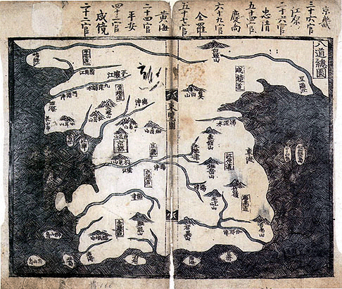

독도는 역사적으로 중요한 섬으로, 한국과 일본 사이의 영유권 분쟁의 중심에 있다.
독도에 대한 최초의 기록은 삼국사기와 고려사에 나타나며, 이들 기록에서는 울릉도와 독도를 '우산도'로 언급하고 있습니다. 이는 삼국시대와 고려시대부터 독도가 한반도의 영토로 인식되었음을 보여줍니다.
조선시대에는 《세종실록 지리지》(1454)와 《동국여지승람》(1531) 등 다양한 문헌에서 독도가 조선의 영토임을 명시하고 있습니다.
독도의 역사는 수많은 역사적 문헌과 사건들을 통해 그 정당성을 확인할 수 있습니다. 현재 대한민국은 독도를 실효적으로 지배하고 있으며, 다양한 노력을 통해 독도의 영유권을 국제사회에 알리고 있습니다.